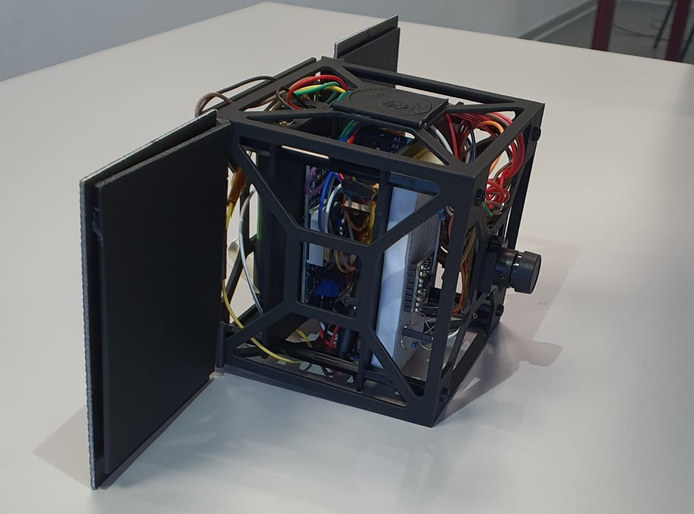
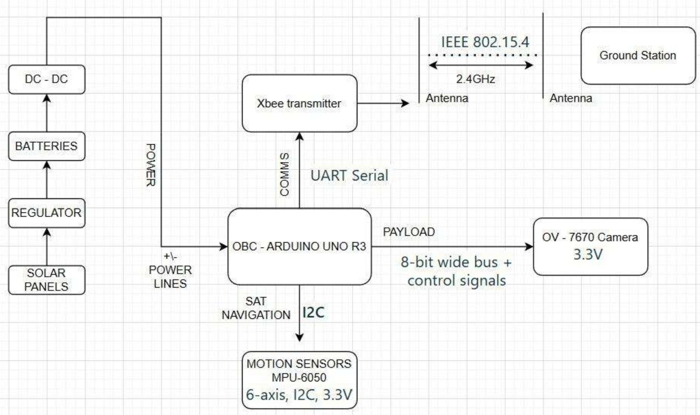

01Mission rationale
Tropical-cyclone monitoring is dominated by large geostationary and polar-orbiting weather assets — superb at the global scale, but with revisit and tasking constraints that don't always match the needs of regional disaster-response agencies in the Caribbean and sub-Saharan Africa. Eyesat-1 is a proof-of-concept that argues for the complementary role of low-cost, low-resolution CubeSats: not to replace those assets, but to add density and responsiveness to regional cloud-morphology tracking.
The conceptual end-users are NOAA, WMO, UN-SPIDER, Copernicus EMS, and CDEMA. The mission objective is to image hurricane cloud structures with enough fidelity to track morphology evolution over the lifecycle of a single storm.

02What I led
I led subsystem integration and the requirements-and-verification thread. That meant translating the team's mission objectives into 22 design requirements across spacecraft, OBC, payload, COMMS, ADCS, power, and environmental categories — each paired with a verification method (test, analysis, inspection, demonstration) and a measurable success criterion.
On the integration side, I drove the bench-test campaign that proved the end-to-end dataflow from payload through OBC to COMMS to ground station, and I authored the V&V matrix that closed against all 22 requirements.
03Architecture
The bus is deliberately low-cost and educational: an Arduino Uno R3 handles command and data, an OV7670 camera serves as the imaging payload, an XBee module provides RF communications to the ground station, an MPU-6050 IMU supports basic attitude knowledge, and an 18650 lithium-ion pack with an MPPT charge controller handles power. The frame is 3D-printed PLA — not flight-grade, but appropriate for a ground-demonstration prototype.

04Key numbers
05V&V results
All 22 design requirements were verified through bench testing. The end-to-end dataflow was validated — payload capture, OBC packaging, COMMS transmission, and ground-station reception — with no packet loss in the laboratory environment. Communication link held at RSSI better than −90 dBm at the 8-metre test range.
Mass closed at 415 g measured, against the 1.33 kg standard 1U envelope, leaving substantial margin for any real-mission upgrades. Peak power consumption of 0.712 W is well within the budget a typical 1U deployable solar-panel array can sustain at LEO duty cycles.
06What I'd improve
The current ground station relies on the same XBee module as the spacecraft — convenient for the demonstration, unrealistic for orbit. A proper RF chain with a directional antenna and an SDR receiver would be the next step toward an orbit-realistic test bed. The OV7670 was selected for cost and Arduino compatibility; for actual cloud-morphology science a higher dynamic-range sensor (and a pointing solution better than three-axis magnetic attitude knowledge) would be needed.
On the systems side, a proper FMECA in the style of the Titan project would harden the design — the prototype was integrated under graduate-deliverable timescales, not under a full RAMS-driven concurrent-engineering process.